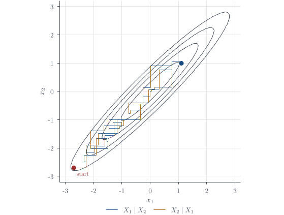
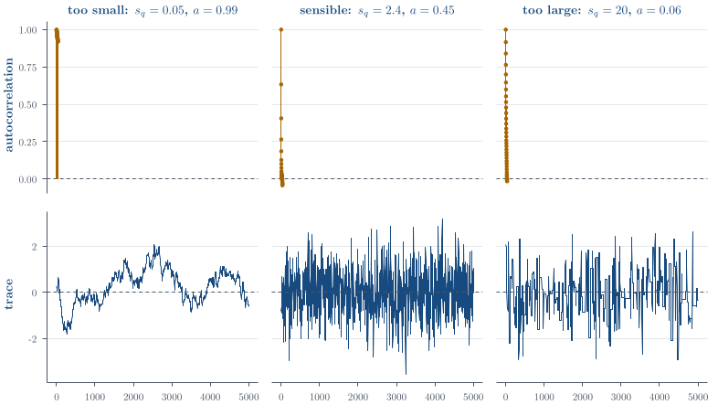

Markov chains, Gibbs sampling, and Metropolis–Hastings
Part of Bayesian statistics · 31 questions on this topic · What links here
Markov chains, Gibbs sampling, and Metropolis–Hastings

| Part | Bayesian statistics |
| Chapter | 4 of 9 in this part |
| Previous | Conjugate analysis for normal models |
| Next | Categorical data and the Dirichlet distribution |
| Questions | 31 (9 book, 13 practice, 4 final prep, 5 concept) |
| Definitions | Markov chain · Stationarity and detailed balance · Systematic-scan Gibbs sampler · Metropolis–Hastings update |
| Results | Detailed balance implies stationarity · Metropolis–Hastings invariance |
| Figures | 2 |
Markov chains and equilibrium
Definition 1 (Markov chain) A stochastic process X_0,X_1,\ldots is a Markov chain if \mathbb{P}(X_{t+1}\in A\mid X_t,X_{t-1},\ldots,X_0) =\mathbb{P}(X_{t+1}\in A\mid X_t) \qquad(1) for every measurable set A. In a discrete state space, write q(y\mid x) for the transition probability from x to y; in a continuous state space it is a transition density.
Definition 2 (Stationarity and detailed balance) A distribution \pi is stationary if a state distributed as \pi remains distributed as \pi after one transition. The global balance equation is \pi(y)=\sum_x\pi(x)q(y\mid x) \quad\text{or}\quad \pi(y)=\int\pi(x)q(y\mid x)\,\mathrm{d} x. \qquad(2) A stronger sufficient condition is detailed balance: \pi(x)q(y\mid x)=\pi(y)q(x\mid y) \quad\text{for all }x,y. \qquad(3)
Theorem 1 (Detailed balance implies stationarity) If a transition kernel q satisfies Equation 3 for a probability distribution \pi, then \pi satisfies global balance and is a stationary distribution of the chain.
Proof. Proof. Integrate both sides of Equation 3 in x: \begin{align*} \int\pi(x)q(y\mid x)\,\mathrm{d} x &=\int\pi(y)q(x\mid y)\,\mathrm{d} x\\ &=\pi(y)\int q(x\mid y)\,\mathrm{d} x\\ &=\pi(y). \end{align*} The last equality holds because a transition density integrates to one.
Stationarity alone is not enough for simulation. One also needs conditions such as irreducibility and aperiodicity so that the chain can reach the whole target support and converge to its stationary distribution. These are grouped informally under ergodicity in this chapter.
MCMC is not intrinsically Bayesian. It is a general method for sampling difficult distributions, and it has deep roots in statistical physics as well as major uses in machine learning. Bayesian posterior calculation is one particularly natural application. The practical migration came at about 1990: methods long used in statistical physics, particularly condensed-matter problems involving large interacting systems, were taken up for posterior calculations that had previously been restricted largely to analytically convenient models. The recipe is to construct a chain whose equilibrium distribution is the posterior, then use its dependent output as a Monte Carlo sample.1
A four-state random walk
Example 1 (Four-state random walk) Question. Consider states 1,2,3,4 arranged in a line. At every state the chain stays put with probability 1/2. From an endpoint it moves to the only neighbour with probability 1/2; from an interior state it moves left or right with probability 1/4 each. With columns indexing the current state and rows the next state, construct the transition matrix and find the stationary distribution.
Solution. The transition matrix is
{\color{blue}\boldsymbol{Q}}= \begin{pmatrix} 1/2&1/4&0&0\\ 1/2&1/2&1/4&0\\ 0&1/4&1/2&1/2\\ 0&0&1/4&1/2 \end{pmatrix}.
Detailed balance between states 1 and 2 requires
\pi_1\frac12=\pi_2\frac14 \quad\Longrightarrow\quad \pi_2=2\pi_1.
Similarly,
\pi_2\frac14=\pi_3\frac14 \Longrightarrow\pi_3=\pi_2, \qquad \pi_3\frac14=\pi_4\frac12 \Longrightarrow\pi_3=2\pi_4.
Hence
{\boldsymbol{\pi}}=(\pi_1,\pi_2,\pi_3,\pi_4)^{\mathsf T} \propto(1,2,2,1)^{\mathsf T}.
Normalising by 1+2+2+1=6 gives
\boxed{{\boldsymbol{\pi}}=(1/6,2/6,2/6,1/6)^{\mathsf T}}.
Gibbs sampling
Definition 3 (Systematic-scan Gibbs sampler) Suppose the target is a joint density \pi(x_1,\ldots,x_p) that is difficult to sample from directly, while every full conditional is available. One Gibbs sweep updates coordinates in order: \begin{align*} X_1^{(t+1)}&\sim \pi(x_1\mid X_2^{(t)},\ldots,X_p^{(t)}),\\ X_2^{(t+1)}&\sim \pi(x_2\mid X_1^{(t+1)},X_3^{(t)},\ldots,X_p^{(t)}),\\ &\ \vdots\\ X_p^{(t+1)}&\sim \pi(x_p\mid X_1^{(t+1)},\ldots,X_{p-1}^{(t+1)}). \end{align*} Each update uses the newest available coordinate values. Under standard ergodicity conditions, X^{(t)} converges in distribution to \pi. For a full conditional, the other coordinates are held fixed. Therefore
\pi(x_i\mid x_{-i}) =\frac{\pi(x_i,x_{-i})}{\pi(x_{-i})} \propto\pi(x_i,x_{-i}) \quad\text{as a function of }x_i.
Terms involving only x_{-i} may be dropped, but any term that still contains x_i must remain. Gibbs accepts every coordinate draw because it samples from the exact conditional rather than proposing and rejecting a candidate.
Bivariate exponential example
Example 2 (Bivariate exponential target) The target is
\pi(x_1,x_2)\propto e^{-x_1x_2-x_1-x_2}, \qquad x_1,x_2\geq0.
Question. Derive both full conditional distributions and use them to specify a systematic-scan Gibbs sampler.
Solution. To obtain X_1\mid X_2=x_2, hold x_2 fixed: \begin{align*} \pi(x_1\mid x_2) &\propto\pi(x_1,x_2)\\ &\propto e^{-x_1x_2-x_1-x_2}\\ &\propto e^{-x_1(x_2+1)}, \qquad x_1\geq0. \end{align*} The omitted factor e^{-x_2} is constant in x_1. Normalising gives
\pi(x_1\mid x_2)=(x_2+1)e^{-(x_2+1)x_1},
so
X_1\mid X_2=x_2\sim\operatorname{Exp}(x_2+1).
By symmetry,
X_2\mid X_1=x_1\sim\operatorname{Exp}(x_1+1).
Starting from any nonnegative pair (x_1^{(0)},x_2^{(0)}), the sampler is \begin{align*} x_1^{(t+1)}&\sim\operatorname{Exp}(x_2^{(t)}+1),\\ x_2^{(t+1)}&\sim\operatorname{Exp}(x_1^{(t+1)}+1). \end{align*}
Running the Gibbs sampler
The full conditionals above are the part to derive. Once they are correct, the sampler itself is a short computation. The newest value of x_1 must be used in the update of x_2; using the old value in both lines would define a different transition rule.
gibbs_exp <- function(iterations) {
out <- matrix(0, iterations, 2) # start at (0, 0)
for (t in 2:iterations) {
out[t, 1] <- rexp(1, rate = out[t - 1, 2] + 1)
out[t, 2] <- rexp(1, rate = out[t, 1] + 1)
}
out
}
set.seed(3500)
draw <- gibbs_exp(20000)
keep <- draw[-seq_len(1000), ]
matplot(keep, type = "l", lty = 1)
acf(keep[, 1])The trace plot and autocorrelation function are not substitutes for the stationarity argument. They address the separate practical question of whether this finite run appears to have explored the target well enough for the posterior summary at hand.
Normal mean and variance example
Example 3 (Normal mean and variance) Question. For the joint normal-model posterior in Equation (4) in Conjugate analysis for normal models, describe a systematic Gibbs sampler and state how retained draws estimate the posterior mean of \mu.
Solution. For the joint posterior in Equation (4) in Conjugate analysis for normal models, alternate \begin{align*} \mu^{(t+1)}&\sim p(\mu\mid\sigma^{2(t)},{\boldsymbol{x}}) \quad\text{using (5)},\\ \sigma^{2(t+1)}&\sim p(\sigma^2\mid\mu^{(t+1)},{\boldsymbol{x}}) \quad\text{using (6)}. \end{align*} After discarding a warm-up segment, Monte Carlo estimates use the retained draws. For example,
\widehat{\mathbb{E}}(\mu\mid{\boldsymbol{x}}) =\frac1L\sum_{t=B+1}^{B+L}\mu^{(t)},
where B is the number of discarded iterations. Because the draws are dependent, L correlated draws contain less information than L independent draws. Autocorrelation, trace plots, multiple chains, and effective sample size are therefore part of a serious analysis.
Initialisation, warm-up, and dependence
Remark 1 (Warm-up is not a convergence proof). The chain should be initialised in a plausible region when one is available. A start many standard deviations from the typical set can require a long time to return, while a start at the mean of a separated mixture can lie in a low-density gap. Multiple dispersed chains help reveal failure to explore all modes; they do not repair it automatically.
Discarding early draws is called warm-up or burn-in. It limits dependence on the chosen initial state, but it is not a proof of convergence. Strong posterior correlation produces staircase-like Gibbs paths and high autocorrelation. Separated modes are harder still because a coordinate-wise move may have to cross a low-density barrier.
Thinning by retaining every kth draw reduces storage and visible serial dependence, but usually throws away usable information. Unless storage or an expensive downstream calculation is the constraint, retain all post-warm-up draws and quantify their effective sample size. Posterior means, probabilities, and equal-tailed intervals are computed from those draws; a continuous MAP is found by optimisation, not by asking which simulated value occurred most often.
Burn-in is a practical attempt to reduce the memory of a poor starting point; it is not a theorem that the retained chain has converged. A very long run can make an initial mistake negligible, but separated modes may still defeat a sampler that never travels between them. The central question is not merely how many iterations were produced, but whether the chain explored every region whose posterior mass matters often enough to estimate their relative weights.
The deliberately absurd comparison is between 100{,}000 draws and 100 billion draws. A fixed number of poor initial draws becomes negligible as a proportion of an enormous run. That arithmetic does not help if an important remote mode is never visited: the question is whether such a region would appear in a run of that length, not merely whether the denominator is large.
Raising a target density to a power, \pi(x)^c, sharpens it for c>1 and flattens it for 0<c<1. Simulated annealing gradually changes such a power or temperature so that sampling increasingly resembles optimisation. 2
Metropolis–Hastings
Why another sampler is needed
Gibbs sampling is wonderfully direct when every full conditional is a distribution from which we can simulate. Often it is not. The logit-normal coin model in the logit-normal Metropolis–Hastings exercise, for example, has posterior kernel
f(\theta) =\theta^{x-1}(1-\theta)^{n-x-1} \exp\!\left[-\frac12\{\operatorname{logit}(\theta)-1\}^2\right], \qquad 0<\theta<1.
This is not a Beta kernel, nor another standard density from which we can draw directly. We can nevertheless evaluate f(\theta) at any admissible value. Writing
\pi(\theta)=\frac{f(\theta)}{C}, \qquad C=\int_0^1 f(t)\,\mathrm{d} t,
makes the computational problem precise: we want draws from \pi using pointwise evaluations of f, without first calculating the intractable normalising constant C.
The Metropolis–Hastings strategy is to construct a Markov chain whose stationary distribution is \pi. After warm-up, its dependent states can be used to estimate posterior quantities. The design problem is therefore not to sample from \pi in one step, but to devise a transition rule that preserves \pi.
Deriving the acceptance probability
Begin with any proposal density q(y\mid x) that is easy to simulate. It will not generally satisfy detailed balance for \pi:
\pi(x)q(y\mid x)\neq \pi(y)q(x\mid y).
We correct the imbalance by accepting a proposed move x\to y with probability a(x,y). For y\neq x, the resulting transition density is
q_{\mathrm{MH}}(y\mid x)=q(y\mid x)a(x,y).
Detailed balance will hold if
\pi(x)q(y\mid x)a(x,y) =\pi(y)q(x\mid y)a(y,x).
Consequently the paired acceptance probabilities must obey \frac{a(x,y)}{a(y,x)} =\frac{\pi(y)q(x\mid y)}{\pi(x)q(y\mid x)} =:r(x,y). \qquad(4) Only their ratio is prescribed. Since rejection wastes a possible move, take the largest probabilities compatible with Equation 4 and with 0\leq a\leq1. If r(x,y)\leq1, set a(x,y)=r(x,y) and a(y,x)=1; if r(x,y)>1, set a(x,y)=1 and a(y,x)=1/r(x,y). Both cases are a(x,y)=\min\!\left\{ 1, \frac{\pi(y)q(x\mid y)}{\pi(x)q(y\mid x)} \right\}. \qquad(5)
Definition 4 (Metropolis–Hastings update) Let \pi(x) be a target density known only up to proportionality. Given X_t=x:
propose Y=y from a proposal density q(y\mid x);
calculate r(x,y) from Equation 4 and put a(x,y)=\min\{1,r(x,y)\};
draw U\sim\operatorname{Unif}(0,1) and set
X_{t+1}= \begin{cases} y,&U\leq a(x,y),\\ x,&U>a(x,y). \end{cases}
If \pi(x)=f(x)/C for unknown C, then
\frac{\pi(y)}{\pi(x)} =\frac{f(y)/C}{f(x)/C} =\frac{f(y)}{f(x)},
so the normalising constant cancels.
For a posterior, the evidence p(\text{data}) is precisely such a constant, so the ratio needs only likelihood times prior. In computation we normally evaluate the log ratio and accept when
\log U\leq \min\{0,\log r(x,y)\}.
This avoids numerical underflow when an unnormalised target is a product of many small terms.
This cancellation is why Metropolis methods became central in statistical physics. An Ising model on m binary sites has 2^m configurations, making its partition function impractical to sum, but ratios of unnormalised target weights are immediate. The original Metropolis algorithm used symmetric proposals; Hastings’ generalisation supplied the proposal-density correction in Equation 5.3
The wartime history surrounding Los Alamos also includes Leó Szilárd.4
For y\neq x, the Metropolis–Hastings transition density is
q_{\mathrm{MH}}(y\mid x)=q(y\mid x)a(x,y).
For y=x, the transition probability includes the total rejection probability:
q_{\mathrm{MH}}(x\mid x) =1-\int_{z\neq x}q(z\mid x)a(x,z)\,\mathrm{d} z.
Thus a rejected proposal is not thrown away in search of another proposal: the current value is recorded again. If instead we redraw until a proposal is accepted, the transition density becomes
\widetilde q(y\mid x) =\frac{q(y\mid x)a(x,y)}{A(x)}, \qquad A(x)=\int q(z\mid x)a(x,z)\,\mathrm{d} z.
The extra normaliser depends on the current state. This altered chain is in detailed balance with a density proportional to \pi(x)A(x), not generally with \pi(x), and therefore targets the wrong distribution.
Detailed-balance proof without skipped cases
Theorem 2 (Metropolis–Hastings invariance) The Metropolis–Hastings transition defined by Equation 5 satisfies detailed balance with respect to \pi. Consequently, \pi is stationary.
Proof. Proof. Let
r(x,y)=\frac{\pi(y)q(x\mid y)} {\pi(x)q(y\mid x)}.
For y\neq x, \begin{align*} \pi(x)q_{\mathrm{MH}}(y\mid x) &=\pi(x)q(y\mid x)\min\{r(x,y),1\}. \end{align*} There are two cases.
If r(x,y)\leq1, then \begin{align*} \pi(x)q_{\mathrm{MH}}(y\mid x) &=\pi(x)q(y\mid x)r(x,y)\\ &=\pi(x)q(y\mid x) \frac{\pi(y)q(x\mid y)}{\pi(x)q(y\mid x)}\\ &=\pi(y)q(x\mid y). \end{align*} Since r(y,x)=1/r(x,y)\geq1, the reverse move is accepted with probability one, so
\pi(y)q_{\mathrm{MH}}(x\mid y) =\pi(y)q(x\mid y).
If r(x,y)>1, then the forward move is accepted with probability one:
\pi(x)q_{\mathrm{MH}}(y\mid x)=\pi(x)q(y\mid x).
Now r(y,x)<1, so \begin{align*} \pi(y)q_{\mathrm{MH}}(x\mid y) &=\pi(y)q(x\mid y)r(y,x)\\ &=\pi(y)q(x\mid y) \frac{\pi(x)q(y\mid x)}{\pi(y)q(x\mid y)}\\ &=\pi(x)q(y\mid x). \end{align*} Thus detailed balance holds in both cases. For x=y, both sides of the detailed-balance equation are identical. Therefore \pi is stationary.
The theorem establishes invariance, not convergence from an arbitrary starting value and not efficiency. The ergodicity conditions stated earlier are still needed for convergence, while proposal design determines how much useful information the dependent output contains.
Random-walk and independent proposals
For a random-walk proposal Y=x+Z with a distribution symmetric about zero,
q(y\mid x)=q(x\mid y),
so Equation 5 reduces to
a(x,y)=\min\!\left\{1,\frac{\pi(y)}{\pi(x)}\right\}.
Every proposed move to higher target density is accepted; a move to a point with two-thirds as much density is accepted with probability 2/3.
For an independent proposal q(y\mid x)=g(y),
a(x,y)=\min\!\left\{ 1,\frac{\pi(y)g(x)}{\pi(x)g(y)} \right\}.
Equivalently, with w(z)=\pi(z)/g(z),
a(x,y)=\min\!\left\{1,\frac{w(y)}{w(x)}\right\}.
The Hastings factor g(x)/g(y) corrects for the fact that g may propose some regions too often and others too rarely. It must not be discarded merely because the proposal is independent of the current state. An independent proposal can jump between separated modes, but it performs poorly if g under-covers a region where \pi is large. A local random walk can represent local shape well but may become trapped in one mode. Proposal scale is therefore a genuine tuning decision, not a cosmetic one.
Gibbs sampling as an always-accepted MH update
The connection with Gibbs sampling can be made exact. Suppose the current state is {\boldsymbol{x}}=(x_1,x_2)^{\mathsf T} and we update only the first coordinate by proposing
{\boldsymbol{y}}=(y_1,x_2)^{\mathsf T}, \qquad y_1\sim\pi(\,\cdot\mid x_2).
Then
q({\boldsymbol{y}}\mid{\boldsymbol{x}})=\pi(y_1\mid x_2), \qquad q({\boldsymbol{x}}\mid{\boldsymbol{y}})=\pi(x_1\mid x_2).
Using joint equals conditional times marginal, the Hastings ratio is \begin{align*} r({\boldsymbol{x}},{\boldsymbol{y}}) &=\frac{\pi(y_1,x_2)\pi(x_1\mid x_2)} {\pi(x_1,x_2)\pi(y_1\mid x_2)}\\ &=\frac{\pi(y_1\mid x_2)\pi(x_2) \pi(x_1\mid x_2)} {\pi(x_1\mid x_2)\pi(x_2) \pi(y_1\mid x_2)}\\ &=1. \end{align*} Every Gibbs coordinate proposal is therefore accepted. This does not imply that every Gibbs sampler moves efficiently. In the bivariate-normal example, as |\rho|\to1 the conditional standard deviation \sqrt{1-\rho^2} tends to zero: acceptance remains one while successive states move only a very short distance.
Proposal design is an art because local and global exploration pull in different directions. Tiny random-walk steps are accepted but travel slowly; huge steps travel far but are mostly rejected. An independent proposal can jump between modes, yet it wastes effort if it puts mass where the target has almost none. The Hastings correction guarantees the right equilibrium under the required conditions; it does not guarantee an efficient journey there.

Pilot adaptation and a fixed proposal
Adaptive proposals are a practical response to this tuning problem. A conservative version has two stages:
run a pilot calculation to learn a plausible centre, scale, or covariance for the proposal;
discard the pilot output, fix the learned proposal, restart the chain, and use only the second-stage draws for inference.
Conditional on the now-fixed proposal, the ordinary Metropolis–Hastings invariance argument applies to the retained chain.
Some adaptive schemes retain the history and continue changing the proposal during the run. Then the transition rule depends on time and on more than the current state, so the fixed-kernel proof given above no longer establishes the result. Such methods can be valid, but they require additional conditions and theory. Validity does not follow merely from the fact that the proposal seems to improve.
Questions on this topic
Open a question to attempt it. Its worked answer is folded away at the bottom of the page.
What links here
Pages (7)
- The Beta–Binomial model — via MCMC
- Conjugate analysis for normal models — via full conditional distributions
- Exponential families and conjugacy — via Metropolis–Hastings, Gibbs sampling
- Hierarchical Bayes — via Gibbs sampler, MCMC, Metropolis–Hastings
- Bayesian linear regression — via burn-in, MCMC, Gibbs sampler
- Dependence along a series — via Markov chain
- Reference formulas and problem-solving workflow — via Gibbs sampling, Metropolis–Hastings, MCMC
Questions and answers (39)
- Book exercises: Detailed balance · Posterior summaries with dependence · A bivariate-normal Gibbs sampler · Metropolis–Hastings for the logit-normal posterior · Random-walk Metropolis for a correlated normal · An independent Gamma proposal · Direct sampling or Gibbs? · Independent and scaled priors
- Practice set: Q4 · Q5 · Q9 · Q10 · Q14 · Q17 (answer) · Q18 · Q19 · Q23 · Q25 · Q26 · Q42 · Q43 · Q49 · Q50 · Q51 · Q52 · Q58 · Q59
- Final preparation: Question 3 · Question 5 · Question 6 · Question 9 · Question 12 (answer) · Question 13 · Question 16 · Question 17
- Concept checks: C11 (answer) · C13 · C14 · C15
See also
- Articles from this chapter: Markov chain · Stationarity and detailed balance · Detailed balance implies stationarity · Systematic-scan Gibbs sampler · Warm-up is not a convergence proof · Metropolis–Hastings update · Metropolis–Hastings invariance
- All bayesian statistics chapters
- Glossary and index
- Distribution sheet and formula lookup
Footnotes
The systematic-scan method below became known as Gibbs sampling after the 1984 image-restoration paper of Stuart and Donald Geman. The name Monte Carlo refers to the casino in Monaco; the method needs randomness, but it need not involve a Markov chain.↩︎
This physics language is not ornamental. The algorithms were built to handle enormous systems of interacting particles before statisticians found them useful for posterior distributions.↩︎
The 1953 paper lists Nicholas Metropolis, Arianna and Marshall Rosenbluth, and Augusta and Edward Teller. Rosenbluth later gave an account assigning himself and Arianna much of the algorithmic work. The story is contested; see J. E. Gubernatis, “Marshall Rosenbluth and the Metropolis algorithm,” Physics of Plasmas 12, 057303 (2005), doi:10.1063/1.1887186.↩︎
Leó Szilárd helped prompt the United States atomic-bomb programme and later argued for restraint in the use of the weapon. See the United States National Park Service biographical note.↩︎